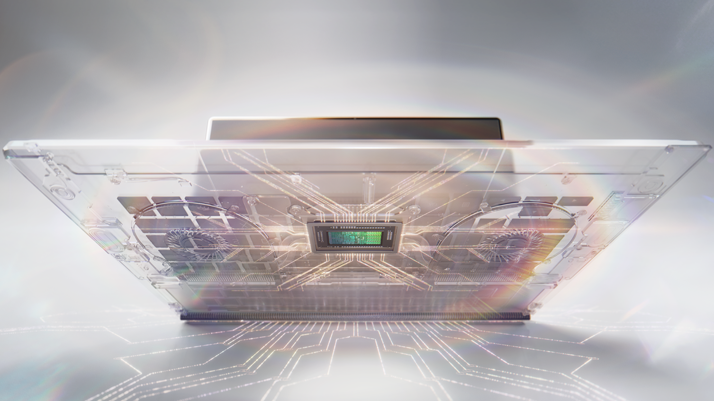
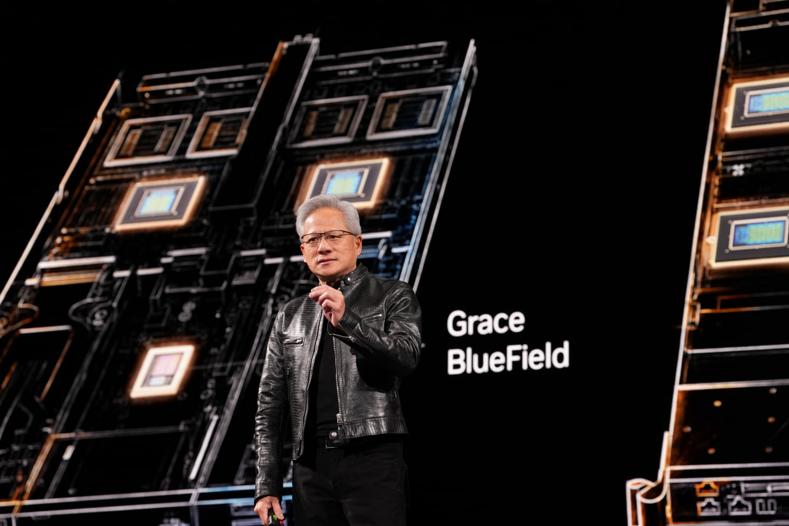
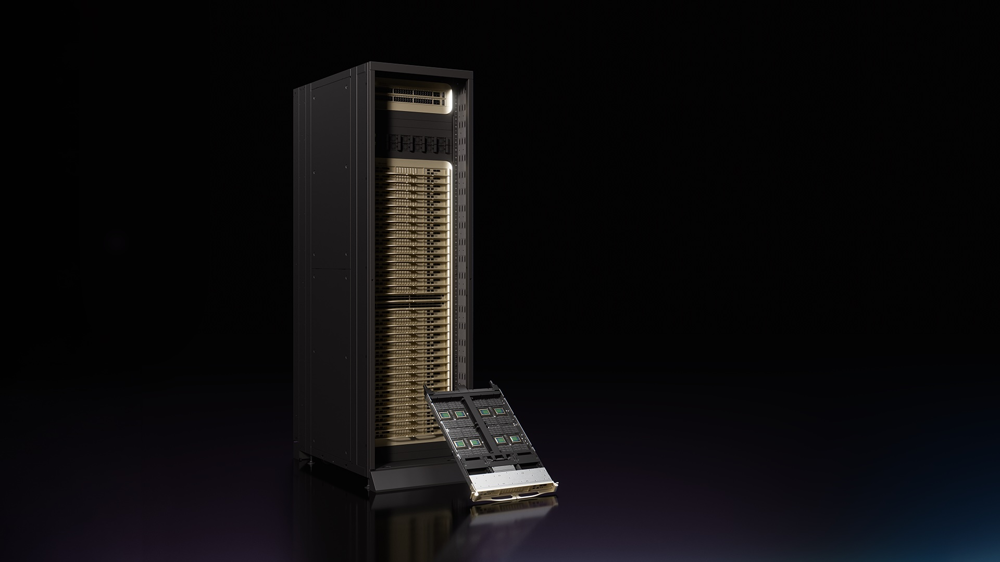

Vom Rechenzentrum in den Rucksack
Nvidia ist jetzt eine Plattform. Was der RTX Spark, die Vera CPU und Dell +12% zusammen bedeuten.
↓Nvidia verkauft seit Jahren die Schaufeln für den KI-Goldrausch. Heute haben sie angefangen, auch die Minen zu bauen.
NVIDIA GTC Taipei 2026 – Jensen Huangs vollständige Keynote (1 h 57 min)

Jensen Huang auf der Bühne in Taipei. Foto: AFP / Getty ImagesKapitel 1Was heute passiert ist
Jensen Huang hat auf dem Computex 2026 in Taipei den RTX Spark vorgestellt. Nvidias ersten eigenen PC-Prozessor überhaupt.
Der Chip kombiniert einen 20-Kern-ARM-CPU (entwickelt mit MediaTek) und 6.144 CUDA-Kerne auf Blackwell-Niveau – das entspricht einer RTX 5070 Laptop-GPU – mit bis zu 128 GB Unified Memory in einem einzigen Paket. 70 Milliarden Transistoren. TSMC 3 nm. 14 mm dünn. Kommt diesen Herbst.
Was das bedeutet: Zum ersten Mal kann ein Laptop ein 100-Milliarden-Parameter-KI-Modell lokal ausführen. Kein Cloud-Abo. Keine Latenz. Keine Daten, die irgendwo hochgeladen werden.
1 Petaflop KI-Performance. In einem Gerät, das in eine Tasche passt.
„Diese Neuerfindung des Computers ist genauso bedeutend wie die Neuerfindung des Telefons zum Smartphone." — Jensen Huang, CEO Nvidia

Nvidia Vera CPU – jetzt in Serienproduktion. Erste Kunden: Anthropic, OpenAI, xAI.Kapitel 2Das andere Ende der Kette
Gleichzeitig, fast nebenbei, gab Jensen bekannt: Die Vera CPU für Rechenzentren ist jetzt in Serienproduktion.
Vera ist Nvidias erster eigener Server-Prozessor. 1,8-mal schneller als aktuelle x86-Chips bei der Verarbeitung von KI-Tokens. Und die Kundenliste klingt wie ein Who's Who der KI-Industrie: Anthropic. OpenAI. SpaceX xAI. Oracle. CoreWeave.
Das ist nicht Zukunftsmusik. Das läuft jetzt.
Nvidia sitzt damit an beiden Enden der Kette. Im Rechenzentrum, das deine KI-Modelle trainiert. Und im Laptop, auf dem du sie ausführst.

Kapitel 3Warum Dell heute 12 Prozent gestiegen ist
Dell hat heute nachbörslich plus 12 Prozent gemacht. Das klingt nach einer Reaktion auf gute Nachrichten. Ist es aber nur halb.
Dell baut RTX-Spark-Laptops. Das ist die eine Seite. Neue Hardware, neue Gerätekategorie, neuer Umsatz.
Aber Dell ist auch einer der ersten Vera-CPU-Kunden für den Datacenter-Bereich. Sie kaufen Nvidias Server-Infrastruktur, bauen Systeme darauf, verkaufen sie weiter.
Dell ist also gleichzeitig Abnehmer und Wiederverkäufer. Konsument und Partner. Das ist kein Zufall, das ist Strategie: Wer Nvidia am nächsten ist, verdient auf beiden Seiten.

Kapitel 4Was die ersten Benchmarks zeigen
Noch am selben Tag kamen erste Benchmark-Zahlen. Im Clang-Test – einem Standard-Benchmark für Entwickler-Workloads – schlägt der RTX Spark das reguläre M5 MacBook um 54 Prozent.
| Chip | Kerne | Clang-Score | vs. RTX Spark |
|---|---|---|---|
| RTX Spark | 20 | 43.149 | – |
| Apple M5 | 10 | 27.996 | 54 % langsamer |
| Apple M5 Pro (15-Core) | 15 | 46.374 | 7 % schneller |
| Apple M5 Pro (18-Core) | 18 | 55.165 | 28 % schneller |
Quelle: @lafaiel / X, via WCCFtech. Clang = Compiler-Benchmark, typische Developer-Last. Erste Ergebnisse, mehr Tests folgen.
Das Ergebnis: RTX Spark liegt zwischen M5 und M5 Pro. Für ein erstes ARM-Notebook von Nvidia ist das respektabel – und deutlich besser als erwartet.
Der wichtigere Unterschied zu Apple bleibt CUDA. Wer KI-Modelle trainiert, Bilder generiert oder mit professionellen Tools arbeitet, ist im Nvidia-Ökosystem zu Hause. Das hat Apple nicht.
Dave2D zeigt die ersten RTX-Spark-Laptops (171k Views, 6 Stunden nach Ankündigung)

Kapitel 5Was die Zahlen verschweigen
Analyst Ming-Chi Kuo schätzt die Stückzahl auf 10 Millionen Geräte in den nächsten zwei Jahren. Das klingt viel. Ist es nicht. Ein iPhone-Quartal.
Der Preis wird das Problem. Strix-Halo-Laptops mit 128 GB kosten heute knapp 3.000 Euro. RTX Spark wird ähnlich oder teurer angesetzt. Nvidia selbst spricht von Creatorn, KI-Entwicklern und Gamern als Zielgruppe.
Windows on ARM hat schon einmal nicht funktioniert. Qualcomm hat Snapdragon X Elite mit ähnlichen Versprechen gestartet. Gaming war enttäuschend. Software-Kompatibilität war lückenhaft. Nvidia hat CUDA als Trumpf, aber ARM-kompatible Windows-Software ist immer noch kein Selbstläufer.
Die Frage ist nicht, ob RTX Spark gut ist. Die Frage ist, ob es gut genug ist, um den Preis zu rechtfertigen.

Kapitel 6Was das für Intel und AMD bedeutet
Intel verliert gerade auf beiden Fronten gleichzeitig.
Im Rechenzentrum: Vera CPU ist schneller und energieeffizienter. Nvidias Kunden sind die größten KI-Betreiber der Welt. Niemand baut neue KI-Infrastruktur auf Intel-CPUs, wenn Vera verfügbar ist.
Beim Laptop: Mit RTX Spark kommt ein ARM-Chip ins Windows-Ökosystem, der Gaming-Niveau mitbringt, CUDA-Kompatibilität hat und von den größten PC-Herstellern der Welt gebaut wird. Intel baut noch x86. Das war mal der Standard. Gerade wird es zum Auslaufmodell.
AMD steht besser da. Strix Halo zeigt, dass AMD das Unified-Memory-Konzept versteht. ROCm wird besser. Aber CUDA bleibt die Sprache, in der KI-Software geschrieben wird – und das ist Nvidias Burggraben.
Kapitel 7Was bleibt
Nvidia war die Fabrik. Jetzt baut die Fabrik ihre eigenen Werkzeuge.
Das passiert selten. Und wenn es passiert, nennt man es nicht mehr Lieferant. Das nennt man Plattform.
Apple hat das mit dem iPhone gemacht: erst Chip, dann Betriebssystem, dann Ökosystem, dann Abhängigkeit. Nvidia macht es jetzt mit KI: erst GPU, dann CPU, dann Laptop-Chip, dann alles dazwischen.
Die interessante Frage ist nicht, ob das funktioniert. Die interessante Frage ist, wer noch die Chips baut, wenn Nvidia die Plattform ist.
Fakten-Stand: 01.06.2026 · Computex 2026 Keynote, Taipei
Kuratiert · Eingeordnet · Erklärt